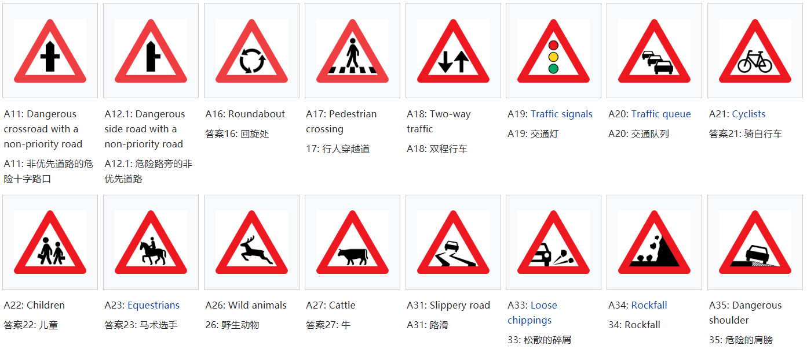

4.1k words in total, 14 minutes required. 不知不觉在丹麦的第二段旅居已逾年，这时间过得确是慢——多半是因COVID的羁绊所赐。近来，回国之路又增许多阻碍，想想不如重新出发，自己做些改变。我们一家三口因而决心革面，排斥不如拥抱，让我们更进一步去了解这个生活了一年却依旧陌生的国家，给自己的生活增加一些色彩。毕竟外部环境短期内不可骤变，不如让自己过得更加丰富一些。这也是这个系列的一个初衷，我们将学习和了解这个国家的交通、住房和其他方方面面，去深度融入这里的生活。加油吧！ 换（临时）驾驶证昨天从Kommune取得了三个月的临时驾照，此处简略介绍下整个过程。预备材料如下： 国内驾照原本：上交给Kommune，后续需要送警局验证，主要向国内核实该证件的合法性； 国内驾照翻译件：我选择了支付宝的翻译服务，支付了邮费获得了一个翻译公证件。但是在上交时，工作人员表达了质疑，在我的坚持下他们表示可以尝试，如果后续有问题可能需要补交材料。保险情况下，可选择中文驾校帮助代办； 健康证明：这个需要联系家庭医生办理，主要包括视力和其他病史的检查。需要交纳约400克朗的检测费用。前去检查需要预备一张2寸照片（医生对照片的时效性有要求，即不能是过早时期拍摄的照片，因此我特地去照相馆拍摄了一张新的照片），最后医生会将健康表和照片封存在一个信封中提供给你； 居留证明：一般情况下提供粉卡即可； 黄卡（建议也携带护照）； 填了一个表格后，不出所料，得到了三个月的临时驾照。所谓的临时驾照，即一张白纸，在国内驾照上交的情况下，如果碰到警察路检，只需要出示这张纸就好了（需要好好保存啊！）。此外，按照工作人员的指示，这张纸的效力为3个月，在得到临时驾照的同时，警局会开始审核我的材料，如果在漫长过程后通过，会收到警局的通知。 从得到通知起的半年内，申请人必须参加理论和实践考试，以获得丹麦的合法驾照。当然，在此申请过程中，我的临时驾照可以到Kommune进行renew，据说现在renew的次数为1次，即临时驾照最多可以使用半年。 这是本人的一些小经验，更为系统的了解可以移步到博客生活在丹麦。 话不多说，接下来我们来简要学习下丹麦的交通规则[1]。 基本交规 靠右行驶丹麦车辆靠右行驶，与中国大陆相同。 行人先行行人具有绝对的先行权，车必须让人。丹麦是”自行车王国”，一般道路两侧都有自行车道，交通法则上也秉持”行人与自行车优先”的原则，因此在驾驶时注意观察自行车道的状况，尤其是路口右转时要特别当心避让直行的自行车。 系好安全带所有乘客（包括后排）均必须佩戴安全带。 儿童安全座椅7岁以下的儿童必须使用合适的安全座椅且只能坐在后排。 勿用电话驾驶人不得手持手机，如需使用，必须使用蓝牙耳机。 打开近光灯任何上路车辆无论白天夜晚都要打开车灯。如果不开车灯上路，会让你受到100美元以下的处罚。 注重路权丹麦非常注重路权，不管有无标志提醒，谁有路权谁就有优先通过权。道路上画着的红白三角形标志或者白色三角形，表示须给即将驶入的道路上的车辆让路。丹麦路权主要规则有：转弯让直行、辅道让主道、未进入环岛让已进入环岛。丹麦人严格遵守路权意识，在有路权时可能速度很快，也不会观察无路权驶出来的车辆，因此，在丹麦自驾要牢记路权意识，为避免事故发生，没有路权时一定要注意避让。 在路口，公共汽车和自行车享有先行权，其它车辆必须礼让。 在路口和环岛，须让行给行人。 需要转弯时，让行给直行的自行车和轻便摩托车。 救护车和消防车有优先权。 注意信号灯丹麦的交通信号灯一般要比其他国家多两个装置，一是专管公共汽车的横竖道信号灯；二是专管自行车的小型红绿灯。公共汽车和自行车享有先行权，其他车辆必须礼让，否则就是违反交通规则。 不要轻易按喇叭以闪头灯来代替喇叭的使用，除非于紧急状况。 切勿超速丹麦高速公路一般限速130km/h或110km/h，国道限速80km/h或90km/h，市区内限速50km/h。哥本哈根市中心40km/h。驾驶时须注意路边的限速标志，以防超速罚款。 高速减少变道丹麦高速公路较宽敞，一般有双向4车道。原则上，4车道的路面，右1为慢车道，大部分是重卡；右2为普通行车道，一般是轻卡或普通车辆；左2为高速行车道，一般是卡着限速行驶的小型车辆；左1是超车道，只有在超车的时候会用到，超车完毕随即归位。丹麦城际高速上车辆不多、地形起伏不大、车况普遍较好，即便是2-3个车道，一般也不会有速度特别慢的车辆，不太需要频繁超车。 STOP标志前停稳3秒丹麦的STOP标志是红灯一样的存在，所有车辆见此标志都须停车，即使周围无车辆无行人，也必须停稳三秒，观察路口行人和车辆情况后方可通过。 交通标志参见如下页面[2]。 警示标志警示标志 优先标志优先标志 倒红色三角形（yield）即让行标志：表示车辆行至该标志前，须减速并做好停车准备，优先其他车辆、行人，确保安全后方可通行。有行人在前方时，须完全停定，不能边走边让。 黄色菱形即先行权标志，表示车辆在此路段拥有先行权，即可以忽略其他路口的车辆，他们都会礼让此路上的车先行。如有红路灯则以红绿灯为准。 重要路权标志 禁止标志禁止标志 禁止标志 路遇限速标志，必须严格控制在其规定的速度内行驶。 注意白底黑色斜杠表示对应的禁止限定到此终止。 强制性标志强制性标志 进入环岛时要严格让行，如果环岛内有车，一定要停住，让环岛内车辆先行。同时来自左方的车辆也拥有先行权进入环岛。 强制性标志 注意蓝底红色斜杠表示强制性限速到此终止。 信息标志信息标志 标识为Ensrettet的路牌表示该路段为单行道，这个在城镇内很普遍，请注意观察。 信息标志 信息标志 注意蓝底红色斜杠表示强制性限速到此终止。 方向标志方向标志 其他用车信息限速在丹麦，速度限制[4]为： 城市地区50公里/小时（31.1英里/小时）； 城市地区外的高速公路80公里/小时（50英里/小时）； 大部分地区的高速公路130公里/小时（81英里/小时），其他地区110公里/小时（68英里/小时）； 双行道和城市地区外的正常道路80公里/小时（50英里/小时）； 带拖车的汽车和摩托车在高速公路的速度限制为80公里/小时（50英里/小时），在正常道路的速度限制为70公里/小时（44英里/小时）。外国游客在丹麦驾车超过速度限制将面临警察的现场罚款。 道路收费丹麦不设收费道路。 只有连接丹麦西兰岛和菲英岛的大桥Storebaelt Bridge需收费215丹麦克朗，丹麦哥本哈根与瑞典马尔默的厄勒海峡大桥Oresund Bridge需收费260丹麦克朗。 丹麦差不多有30多座大桥[3]，其中最大的三座为： illebæltsbroerne，连接Jylland和Fyn Storebæltsbroen，连接Fyn和Sjælland Øresundsbroen，连接丹麦和瑞典如果驱车通过Storebæltsbroen和Øresundsbroen两座桥是需要交费的，其余的桥都免费。 加油丹麦油价丹麦油价与国际油价接轨，约12丹麦克朗/升。柴油比汽油便宜约10%~15%。 加油站一般营业时间为早上 8：00至晚上20：00，如加油站已经休息，常有自动加油设备可供自行加油。 加油站一般有柴油dieselolie、92 无铅汽油blyfri benzin、95 无铅汽油blyfri benzin super、98 无铅汽油blyfri benzin super plus。 在丹麦加油，可按照汽车油盖或车辆说明，加指定款油。若不确定加几号油，在提车时可询问门店工作人员。 注意不要加错油，如加错，请尽快联系门店，清理油箱和油路系统，再对发动机进行全面检查，不要贸然启动以免伤车。 如何加油？绝大部分油站提供自助加油与人工服务两种方式。自助加油可用信用卡和现金支付。刷卡加油的基本步骤为：插卡——按要求输入信息——取卡——选择汽油型号——取下油枪开始加油。可用VISA/Mastercard支付。现金加油的基本步骤为：记住油枪号——加油站小店收银台交现金——回到加油机处选择汽油型号——取下油枪开始加油——加油站小店收银台收回找零。 因刷信用卡会先扣部分的预授权，建议在便利店付现金。人工加油和国内相似，有工作人员帮忙加油。 停车要泊车或停车等待一般可将车子停在路的右边，不过这在主干道和高速公路上是被禁止的。不得在路中有完整的白色分隔线的道路停车，不得在离穿越的步行者/骑自行车者5米（16英尺）内的地方、或者在离十字路口10米（33英尺）内的地方停车，也不得在离公共汽车站（路缘处涂有黄漆突出）12米（44英尺）内的地方停车。关于某些时候和日子的停车限制会在停车处和不能停车的地方设置标志说明。警察可以移除非法停车的车辆或现场给予罚款处置。在丹麦，要求在允许限时停车的地方使用停车计时圆盘。 哪些地方可以停车？ 公共停车场购物中心、大型超市周围通常都会有专属的免费公共停车场。景区、繁华地区一般都为收费停车场。停车场一般都在路上有指示牌指示出方向。 路边停车路边停车有免费限时停车和计时收费停车。 免费限时停车: 免费停车区有时间限制，需使用停车计时牌（parking disc），记录下停车时间并置于仪表板上以统计时长。丹麦境内租赁车辆均已自带此设备，境外驶入车辆可在加油站及邮局购买。 计时收费：2 timer 9-18 (9-14)表示此处可以在周一至周五9点-18点、周六9点-14点付费停车2小时，超时罚款较高，其余时间可以免费停车。 哪些地方不能停车？ 不能停在残疾人车位、建筑出入口、消防栓旁、公交车站。 禁止停车标志处不能停车。注意不要违规停车，违章停车罚款较高，还有可能遇上被警察锁车的情况。 如何缴费？ 收费停车区停车费价格取决于时段及路段，越接近市中心越昂贵，从9~26丹麦克朗/小时不等。 公共停车场，停车场缴费分停车前付费和停车后付费。 停车前付费：停车——自助缴费机——选择时长——付钱——打印票据——将票据放在挡风玻璃上； 停车后付费与国内相似：入口领取停车票——停车离开——回来后付费。 路边停车 路边停车要注意停车牌上的时间限制。超时罚款较高。基本上采取咪表收费。停车请跟从现场指示牌指引，违规停车将现场罚款约1000丹麦克朗。 咪表缴费：停车——咪表——选择时长——付钱——打印票据——将票据放在挡风玻璃上。 违章及事故处理违章罚款在丹麦自驾，须严格遵守交规并以安全第一。如不幸收到罚单或发生事故，注意不要慌张，及时根据相应流程冷静处理或主动寻求警察帮助。 常见违章事项 一般而言，如果违章被警察发现，将会当场罚款，同时警察会给您一个官方的罚款收据。 如果是被摄像头拍下，将会收到租车公司发过来的罚单。1.如租车公司能代缴的话，将会收到比罚单更高的钱，因为包含了一定的服务管理费；2.如租车公司不能代缴，则需根据罚单上的缴费网址，依照相应指示输入罚单序列号，再输入信用卡信息缴费即可。3.收到罚单后应及时处理，在规定时间内缴纳，如逾期不交，将会产生高昂的滞纳金。 有警车拦截时怎么办？ 警车拦截——打方向灯慢慢靠边停车——摇下四个车窗，双手放在方向盘，保持镇静——期间切勿下车或手放在别处——警察说明拦车原因（一般为检查驾照或开罚单）——行动前先征求警察同意 事故处理在丹麦驾车发生交通意外时，注意不要惊慌，首先查看车内人员是否受伤，再看对方人员受伤情况，如果有伤员应及时自救，并向路人求救。可随时拨打紧急联系电话。报警、火警、救护车：112 刮蹭事故确保人员安全——将车辆移至路边不妨碍交通——拨打112——对车辆的状况及时拍照或录像——由警察登记事故情况，并妥善保存事故记录——联系租车公司和保险公司 车辆被砸被盗拨打112报警——警方做记录——报险——信息核实——成功赔付 抛锚，爆胎如无法将车停在路边，将红色三角警示标牌放置车尾后方至少100米处——紧急时穿戴警示背心——拨打租车公司电话——租车公司就近派遣工作人员拖车或更换轮胎；若租车公司解决不了，让警察帮忙联系拖车服务，修车费用非常高，所以买全保险很重要。 引用1.https://m.tantu.com/t/13882555.html ↩2.https://en.wikipedia.org/wiki/Road_signs_in_Denmark ↩3.https://zdlm.github.io/guide/2018/10/27/Danish-transportation/ ↩4.http://www.visitdenmark.cn/article-page/%E9%A9%BE%E9%A9%B6%E8%A7%84%E5%88%99 ↩5.https://zdlm.github.io/guide/2017/07/21/denmark-drive-question-answer/ ↩ ← Previous Post Next Post→ Table of Contents 换（临时）驾驶证基本交规交通标志警示标志优先标志禁止标志强制性标志信息标志方向标志其他用车信息限速道路收费加油停车违章及事故处理违章罚款事故处理引用